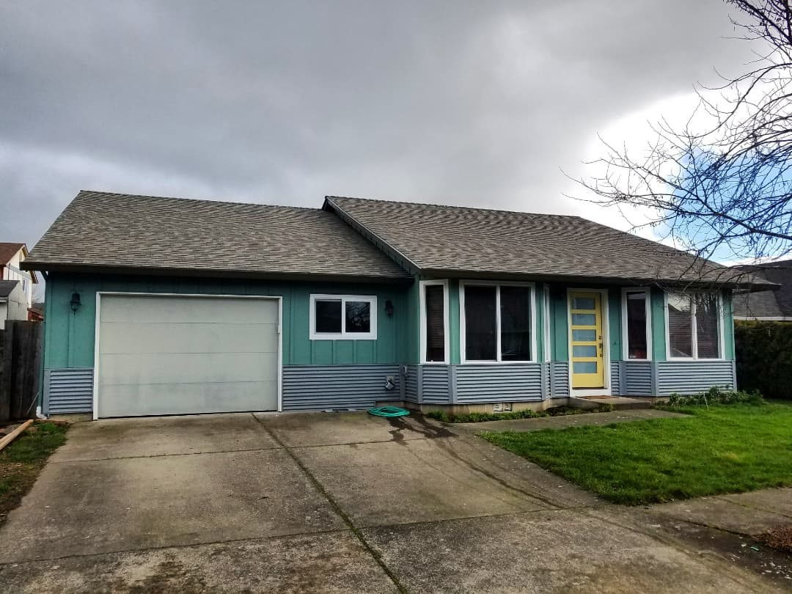

(Front of house. Photo by Shannon Eoff.)
Hiring A Contractor
In order to transform my ordinary master bedroom and bathroom into a master suite vacation rental in Newberg, the first step was to meet with contractors on-site and ask them to bid work I would like to have done. My partner and I gave them ideas for the materials we prefer. Mostly, I just need aesthetic updates, so the bidding process is not overly complicated. The only major decision to make is whether to bump out a closet to create a large shower area or to keep the current 4'x4' fiberglass shower in place.
Materials
Modernization of this particular typical '90s-era, single-level home is imperative. We plan on bringing in the engineered acacia wood floors from the living room and hallway to the master bedroom for cohesion and tile in the bathroom to match the large rectangular tiles of the hall bathroom and hallway laundry closet. The bedroom walls and trim will be repainted to match the current dark blue and white, while the bathroom walls will be updated with white shiplap paneling using a horizontal pattern to make the small bathroom feel more spacious.
Entrance
One of the most important elements in a vacation rental is the entrance. To make guests feel like they are entering a special space, we will replace the current, basic wood gate with a wood and metal gate and create a pathway using rock and non-uniform-looking pavers (a very customized look). We will also be fencing off the patio attached to the master suite and part of the yard so that guests feel free to bring their dogs.
(I like dogs.)
Overhead view of Newberg, Oregon
From niche.com: "Newberg is a town in Oregon with a population of 23,676. Newberg is in Yamhill County. Living in Newberg offers residents a dense suburban feel and most residents own their homes. In Newberg there are a lot of coffee shops and parks. Many families and young professionals live in Newberg and residents tend to lean conservative. The public schools in Newberg are above average."